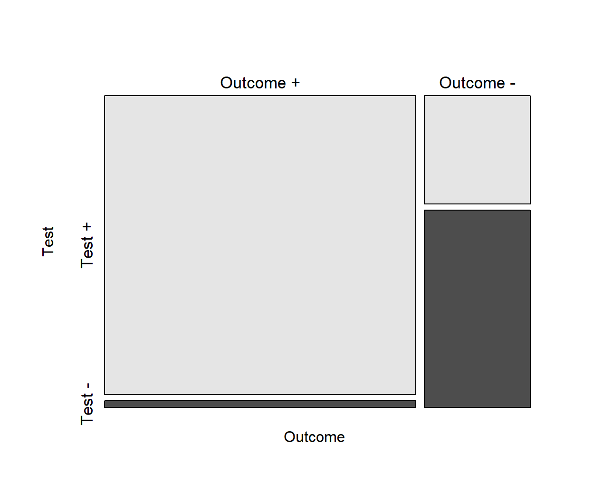
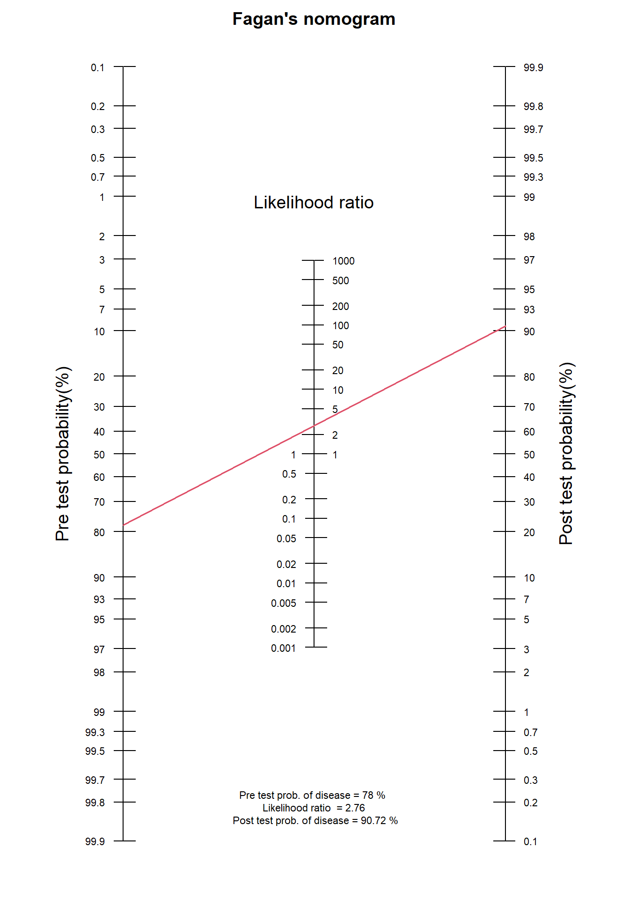
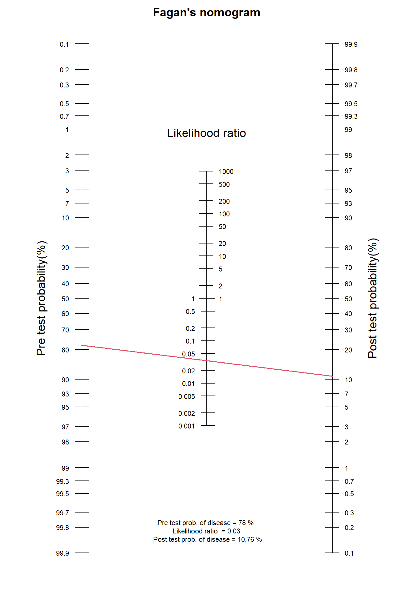

16 Measures of diagnostic test accuracy
In this chapter, we explore fundamental measures of diagnostic test accuracy, including sensitivity, specificity, positive predictive value (PPV), and negative predictive value (NPV). We also explain how to estimate post-test probabilities from pre-test probabilities and likelihood ratios, and we introduce Fagan’s Nomogram as a practical tool for clinicians.
16.1 Contingency 2x2 table
An individual’s disease status is generally classified as either having the disease (\(Outcome+\)) or not having the disease (\(Outcome-\)), as determined by the reference standard (or “gold” standard). Depending on the type of diagnostic test under evaluation (also referred to as index test), the outcome may be measured as either dichotomous (e.g., the presence or absence of breast abnormalities detected through mammography) or continuous (e.g., breast tissue stiffness measured using elastography in ultrasound imaging). It is important to note that a continuous variable can be converted into a dichotomous outcome by selecting an optimal cut-off point (threshold) that distinguishes positive (\(Test+\)) from negative (\(Test-\)) test results.
When the index test provides a dichotomous result for each participant in a study, the data can be organized into a 2 x 2 table, comparing test results (\(Test+\), \(Test-\)) with the “true” disease status (\(Outcome+\), \(Outcome-\)). For example, the results of digital mammography test in 1220 women with suspected breast cancer, compared to the “gold” standard of biopsy/surgery and histopathology, are shown in Table 16.1.
| According to the reference standard | ||||
| \(Outcome+\) (Disease present) | \(Outcome-\) (Disease absent) | Totals | ||
| Index Test result |
\(Test+\) \(Test-\) Totals |
TP=890 FN=20 TP+FN=910 |
FP=110 TN=200 TN+FP=310 |
TP+FP=1000 TN+FN=220 N=1220 (TP+TN+FP+FN) |
Abbreviations: TP: true positive; test positive and disease present. FP: false positive; test positive and disease absent. FN: false negative; test negative and disease present. TN: true negative; test negative and disease absent.
In R:
Outcome
Test Outcome + Outcome -
Test + 890 110
Test - 20 200From this contingency table, we can create a mosaic plot in base R using the mosaicplot() function (Figure 16.1).
mosaicplot(t(tb1), col = c("gray90", "gray30"),
cex.axis = 1.1, main=NULL)
16.2 Diagnostic accuracy measures
The basic diagnostic accuracy measures are:
-
Sensitivity (Se): The ability of the diagnostic test to correctly identify individuals with the disease. It is defined as the proportion of true positive test results among individuals who have the disease (“true positive rate”).
\(Se = P(Test+|Disease+) = \frac{TP}{TP+FN}=\frac{890}{910}=0.978 \ \ \text{or} \ \ 97.8\%\)
-
The Specificity (Sp): The ability of the diagnostic test to correctly identify individuals without the disease. It is defined as the proportion of true negative test results among individuals who do not have the disease (“true negative rate”).
\(Sp = P(Test-|Disease-) = \frac{TN}{TN+FP}=\frac{200}{310}=0.645 \ \ \text{or} \ \ 64.5\%\)
-
Positive Predictive Value (PPV): The probability of presence of disease given a positive test result. It is defined as the proportion of true positive test results among individuals who have a positive test.
\(PPV = P(Disease+|Test+) =\frac{TP}{TP+FP}=\frac{890}{1000}=0.890 \ \ \text{or} \ \ 89.0\%\)
-
Negative Predictive Value (NPV): The probability of absence of disease given a negative test result. It is defined as the proportion of true negative test results among individuals who have a negative test.
\(NPV = P(Disease-|Test-)=\frac{TN}{TN+FN}=\frac{200}{220}=0.909 \ \ \text{or} \ \ 90.9\%\)
IMPORTANT
Positive and negative predictive values (PPV and NPV) are directly influenced by the prevalence of disease in the population being tested. When the same test is applied to a population with a higher prevalence (e.g., women over the age of 55 years), the PPV increases while the NPV decreases. Therefore, when evaluating predictive values of diagnostic or screening tests, it is essential to consider the impact of disease prevalence.
Other useful diagnostic measures include the following:
-
Apparent prevalence: The proportion of individuals with a positive test result.
\(Apparent \ prevalence = \frac{TP + FP}{N}=\frac{1000}{1220}=0.820 \ \ \text{or} \ \ 82.0\%\)
-
True prevalence: The proportion of individuals that are truly diseased.
\(True \ prevalence = \frac{TP + FN}{N}=\frac{910}{1220}=0.746 \ \ \text{or} \ \ 74.6\%\)
-
Likelihood ratio for a positive test result (LR+): The probability of a positive test in individuals with the disease divided by the probability of a positive test in individuals without the disease. It is calculated as \(Se/(1-Sp)\):
\(LR+ = \frac{P(Test+|Disease+)}{P(Test+|Disease-)} = \frac{Se}{1-Sp}=\frac{0.978}{1-0.645}=\frac{0.978}{0.355}= 2.755\)
-
Likelihood ratio for a negative test result (LR-): The probability of a negative test in individuals with the disease divided by the probability of a negative test in individuals without the disease. It is calculated as \((1-Se)/Sp\):
\(LR- = \frac{P(Test-|Disease+)}{P(Test-|Disease-)}= \frac{1-Se}{Sp}=\frac{1-0.978}{0.645}=\frac{0.022}{0.645}= 0.034\)
-
Diagnostic accuracy (effectiveness), expressed as a proportion of correctly classified subjects (TP+TN) among all subjects (N). Diagnostic accuracy is affected by the disease prevalence.
\(Accuracy = \frac{TP + TN}{N}=\frac{890 + 200}{1220}=\frac{1090}{1220}= 0.893 \ \ \text{or} \ \ 89.3\%\)
In R:
The epi.tests() function computes all the above epidemiological statistics based on the 2x2 contingency table.
epi.tests(tb1, digits = 3) Outcome + Outcome - Total
Test + 890 110 1000
Test - 20 200 220
Total 910 310 1220
Point estimates and 95% CIs:
--------------------------------------------------------------
Apparent prevalence * 0.820 (0.797, 0.841)
True prevalence * 0.746 (0.720, 0.770)
Sensitivity * 0.978 (0.966, 0.987)
Specificity * 0.645 (0.589, 0.698)
Positive predictive value * 0.890 (0.869, 0.909)
Negative predictive value * 0.909 (0.863, 0.944)
Positive likelihood ratio 2.756 (2.371, 3.204)
Negative likelihood ratio 0.034 (0.022, 0.053)
False T+ proportion for true D- * 0.355 (0.302, 0.411)
False T- proportion for true D+ * 0.022 (0.013, 0.034)
False T+ proportion for T+ * 0.110 (0.091, 0.131)
False T- proportion for T- * 0.091 (0.056, 0.137)
Correctly classified proportion * 0.893 (0.875, 0.910)
--------------------------------------------------------------
* Exact CIs
Sensitivity, specificity, and likelihood ratio (LR) are generally considered intrinsic characteristics of the test that are independent of disease prevalence. However, it is important to note that several studies have identified potential mechanisms through which variations in disease prevalence can influence these measures (Brenner and Gefeller 1997; Li and Fine 2011; Leeflang et al. 2013; Murad et al. 2023).
16.3 Likelihood ratios in practice
16.3.1 Interpretation of LRs
Let’s elaborate on the meaning of the LR in our example with the digital mammography test.
An LR+ of 2.756 means that a positive result in digital mammography is approximately 2.8 times more likely to occur in individuals with breast cancer than in individuals without breast cancer.
An LR- of 0.034 means that a negative result in the digital mammography is 0.034 times as likely to occur in individuals with breast cancer as it is in individuals without breast cancer. This can also be interpreted as follows: a negative mammography result is approximately 29.4 times (1/0.034) more likely in a woman without breast cancer than in a woman with breast cancer.
IMPORTANT
Every diagnostic test is associated with both LR+ and LR-.
In clinical practice, a higher LR+ is desirable for tests used to “rule in” a disease, while a lower LR- is preferred for tests used to “rule out” the possibility that the individual has the disease.
Values very close to 1 (for either LR+ or LR-) indicate that the test has limited diagnostic value, as it does not meaningfully alter the probability of disease.
16.3.2 Application of LRs
The LR is commonly used in decision-making based on Bayes’ Theorem. The pre-test odds of a particular diagnosis, multiplied by the likelihood ratio of the diagnostic test, determines the post-test odds.
\[ post \text{-} test \ odds = likelihood \ ratio \times pre \text{-} test \ odds \tag{16.1}\]
where the \(\times\) symbol denotes multiplication.
These post-test odds provides an updated estimate of the odds that the patient has the condition or disease after taking into account the diagnostic test result. If the test result is positive, we use the LR+ for this calculation. If the test result is negative, we use the LR- instead. In both scenarios, the odds refer to the odds in favor of the disease being present.
16.3.2.1 LR+ example
LR+ indicates how much the odds of the condition or disease being present increase after a positive test result (Range: 1 to \(+ \infty\)).
LR+ > 1: Indicates that a positive test result increases the post-test odds of the disease being present. The higher the LR+, the more informative the test is for ruling in the disease.
LR+ = 1: Indicates that a positive test result does not change the post-test odds compared to the pre-test odds. In other words, a diagnostic test with an LR+ of 1 provides no additional information about the likelihood of the disease and has no diagnostic value.
Let’s suppose that, based on her family history of breast cancer and clinical symptoms, a woman has a high probability of having breast cancer, estimated at 0.78 (pre-test probability).
INFO
Pre-test probability refers to the probability that a patient has the disease before the result of the diagnostic test is known. This probability can be estimated using clinical judgment or derived from research evidence, such as disease prevalence and clinical prediction rules (Uy 2022).
We are interested in the the post-test probability of breast cancer when the digital mammography is positive. It is important to note that “odds” and “probability” are not the same; however, they can be derived from each other as follows:
\(pre \text{-} test \ odds = \frac{pre \text{-} test \ probability}{1 - pre \text{-} test \ probability} = \frac{0.78}{1-0.78} = \frac{0.78}{0.22} = 3.55\)
\(post \text{-} test \ odds = LR\text{+} \times pre \text{-} test \ odds = 2.756 \times 3.55 = 9.78\)
\(post \text{-} test \ probability = \frac{post \text{-} test \ odds}{post \text{-} test \ odds + 1} = \frac{9.78}{9.78 + 1} = \frac{9.78}{10.78} = 0.9072 \ \ \text{or} \ \ 90.72\%\)
Thus, after considering the positive digital mammography test result, the woman’s probability of having breast cancer increases from 78% to approximately 90.7%.
The Fagan nomogram allows us to turn pre-test probabilities into post-test probabilities without needing to convert into odds. The nomogram typically consists of three parallel scales representing the pre-test probability, the likelihood ratio, and the post-test probability. We can visually estimate the post-test probability of a positive diagnosis result by drawing a line from the known pre-test probability, through the LR+ and read off the post-test probability (Figure 16.2a).
16.3.2.2 LR- example
LR- indicates how much the odds of the condition or disease being present decrease after a negative test result (Range: 0 to 1).
LR- < 1: Indicates that a negative test result decreases the post-test odds of the disease being present. The lower the LR-, the more informative the test is for ruling out the disease.
LR- = 1: Indicates that a negative test result does not change the post-test odds compared to the pre-test odds. In other words, a diagnostic test with an LR- of 1 provides no additional information about the likelihood of the disease and has no diagnostic value.
What is the the post-test probability of breast cancer for the same woman when the digital mammography is negative?
\(post \text{-} test \ odds = LR\text{-} \times pre \text{-} test \ odds = 0.034 \times 3.55 = 0.1207\)
\(post \text{-} test \ probability = \frac{post \text{-} test \ odds}{post \text{-} test \ odds + 1} = \frac{0.1207}{0.1207 + 1} = \frac{0.1207}{1.1207} = 0.1077 \ \ \text{or} \ \ 10.77\%\)
The result indicates that after considering the negative digital mammography test result, the woman’s probability of having breast cancer drops significantly from 78% to approximately 10.8% (Figure 16.2b).

